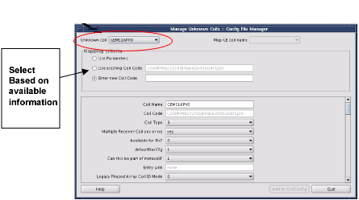

Operating Documentation
Direction 5500113, Rev# 3
Discovery MR450 1.5T Service Methods
Module Version 3.0, Version Date 5/28/09
Operating Documentation |
| Required Persons | Preliminary Reqs | Procedure | Finalization |
|---|---|---|---|
| 1 | Not Applicable | 10 minutes per coil | Not Applicable |
After an upgrade, all unknown coils must reconfigured for the new system and software. Each surface coil is supplied with a configuration data sheet that will be used to help configure the coil. There is also online help available at the bottom of the main Coil Configuration window that will guide the Field Engineer through each data field in the coil configuration process.
| NOTE: | If upgrading from 8.x, 9.x and 10.x, only the [Use parameters] in the mapping criteria can be used, because there are additional fields introduced in later software revs that must now be completed. Make sure that all fields in the lower portion of the window are filled. Only then will [Add to CoilConfig] be enabled. |
| NOTE: | If upgrading from 11.x, all options in Mapping Criteria can be used. [Add to CoilConfig] will be activated only when one of the options in Mapping Criteria is selected. |
Launch the Common Service Desktop, and select the [Configuration] tab. Select [Config File Manager] from the menu, and select [Click Here to Start this Tool].
Select [CoilConfig] on the left side of the Config File Manager, then select the[Manage Unknown Coils] option. See Step Illustration 1.
Illustration 1: Coil Config Tab

The system will display a Manage Unknown Coils pop-up, shown in Illustration 2.
Illustration 2: Unknown Coil Manager

Select the coil that will be configured from the Unknown coil pull-down in the top left of the window. See Illustration 3.
Illustration 3: Unknown Coil List

| ||||
| If a coil name is not recognized as a research or unique coil, GE Service must NOT change individual parameters to enable unknown coils. GE Service must work with the customer to enter the proper Coil Config. | ||||
Select the proper option listed below. See Illustration 2.
Use Parameters: This option tries to map to an existing coil name. If any existing Coil Names are found, select the applicable coil name from the upper right pull-down titled, Map GE Coil Name. (All Coil Config Parameters will be automatically updated.)
Use Existing Coil Code: When this option is selected, the unknown coil has valid Coil Config Parameters, which will be automatically updated.
Enter New Coil Code: The proper Coil Code from a third-party vendor is required and must be entered into the available field.
When done, click [Add to CoilConfig]. (This will only be available once all data fields are completed.) See Step 3.
When a message box displays: “Do you want to add this coil to Coil Config NOW?,” click [Yes].
When finished adding coils, click [Quit] at the bottom right corner of the Manage Unknown Coils Window.
Click the [Save Changes] button in the bottom right corner of the CoilConfig main page. See Illustration 1.
Click [Quit] at the bottom right corner of the CoilConfig main page (Illustration 1 ).
Reboot Signa after all unknown coils are properly mapped.
Perform a quick scan for all unknown coils, without using geservice as the Patient ID, to verify that the system recognizes the coil.
Refer to the Functional Checks in the documentation supplied with each coil to ensure it is working correctly.